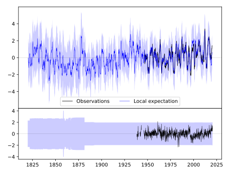
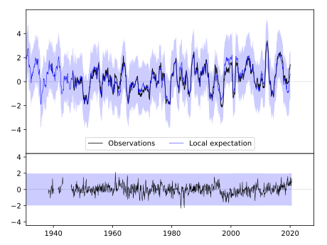
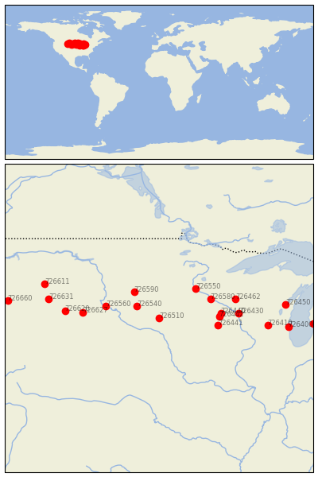

SIOUX FALLS/FOSS FLD [USA]


| Neighbour | Name | Country | Distance | Lon/Lat | Years |
|---|
| 726510 | SIOUX FALLS/FOSS FLD | USA | 2 | -96.7, 43.6 | 1938-2020 |
| 726540 | HURON, SOUTH DAKOTA | USA | 149 | -98.2, 44.4 | 1881-2020 |
| 726590 | ABERDEEN RGNL AP | USA | 241 | -98.4, 45.4 | 1890-2020 |
| 726550 | ST.CLOUD | USA | 297 | -94.2, 45.6 | 1893-2020 |
| 726560 | PIERRE | USA | 301 | -100.3, 44.4 | 1891-2020 |
| 726580 | MINNEAPOLIS/ST PAUL | USA | 313 | -93.2, 44.9 | 1819-2020 |
| 726441 | CHARLES CITY | USA | 328 | -92.7, 43.1 | 1891-2019 |
| 726442 | GRAND MEADOW | USA | 330 | -92.6, 43.7 | 1893-2019 |
| 726440 | ROCHESTER/MUNICIPAL | USA | 338 | -92.5, 43.9 | 1932-2020 |
| 726627 | COTTONWOOD 2 E | USA | 419 | -101.9, 44.0 | 1893-2019 |
| 726430 | LA CROSSE/MUNICIPAL | USA | 434 | -91.3, 43.9 | 1873-2020 |
| 726462 | EAU CLAIRE | USA | 438 | -91.5, 44.9 | 1891-1980 |
| 726620 | RAPID CITY, SOUTH DA | USA | 516 | -103.1, 44.1 | 1888-2020 |
| 726410 | MADISON, WISCONSIN | USA | 600 | -89.3, 43.1 | 1869-2020 |
| 726631 | COLONY | USA | 614 | -104.2, 44.9 | 1893-2019 |
| 726611 | EKALAKA | USA | 666 | -104.5, 45.9 | 1893-2019 |
| 726450 | GREEN BAY, WISCONSIN | USA | 694 | -88.1, 44.5 | 1886-2020 |
| 726400 | MILWAUKEE/G.MITCHELL | USA | 714 | -87.9, 43.0 | 1941-2020 |
| 726660 | SHERIDAN, WYOMING | USA | 831 | -107.0, 44.8 | 1893-2020 |
| 726360 | MUSKEGON/COUNTY | USA | 848 | -86.2, 43.2 | 1940-2020 |